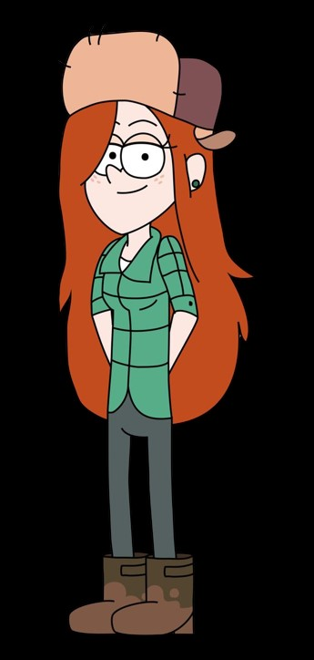

Wendy tem uma aura natural de descolada. Ela é simplesmente super tranquila, divertida e sensata. Ela é quem tenta manter o grupo com o pé no chão.Também trabalha na Cabana do Mistério, mas está sempre enrolando ou fazendo coisas mais interessantes. Seu símbolo é o pacote de gelo.